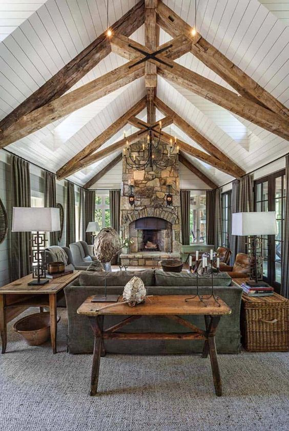
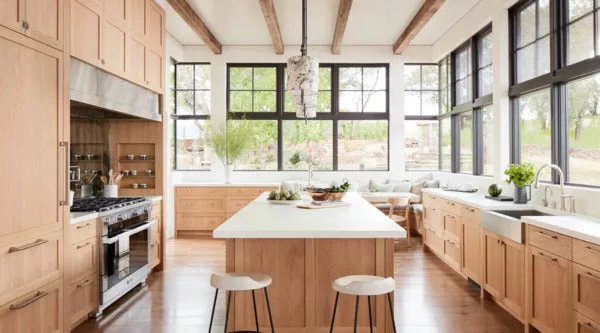

What is Rustic Farmhouse Style?
Rustic farmhouse design blends warmth, simplicity, and traditional charm. It often features natural textures like reclaimed wood, vintage furniture, and cozy textiles. This style draws inspiration from rural life and combines comfort with practicality.
Common Elements
- Exposed wood beams and distressed wood furniture
- Neutral color palettes with earthy tones
- Shiplap walls and apron-front sinks
- Vintage accessories and cozy fabrics
Gallery
 Budget-Friendly Tips
Look for secondhand wooden furniture, DIY distressed finishes, and incorporate antique finds from thrift stores. Neutral paint, cotton textiles, and cozy lighting can also go a long way in achieving this look on a budget.